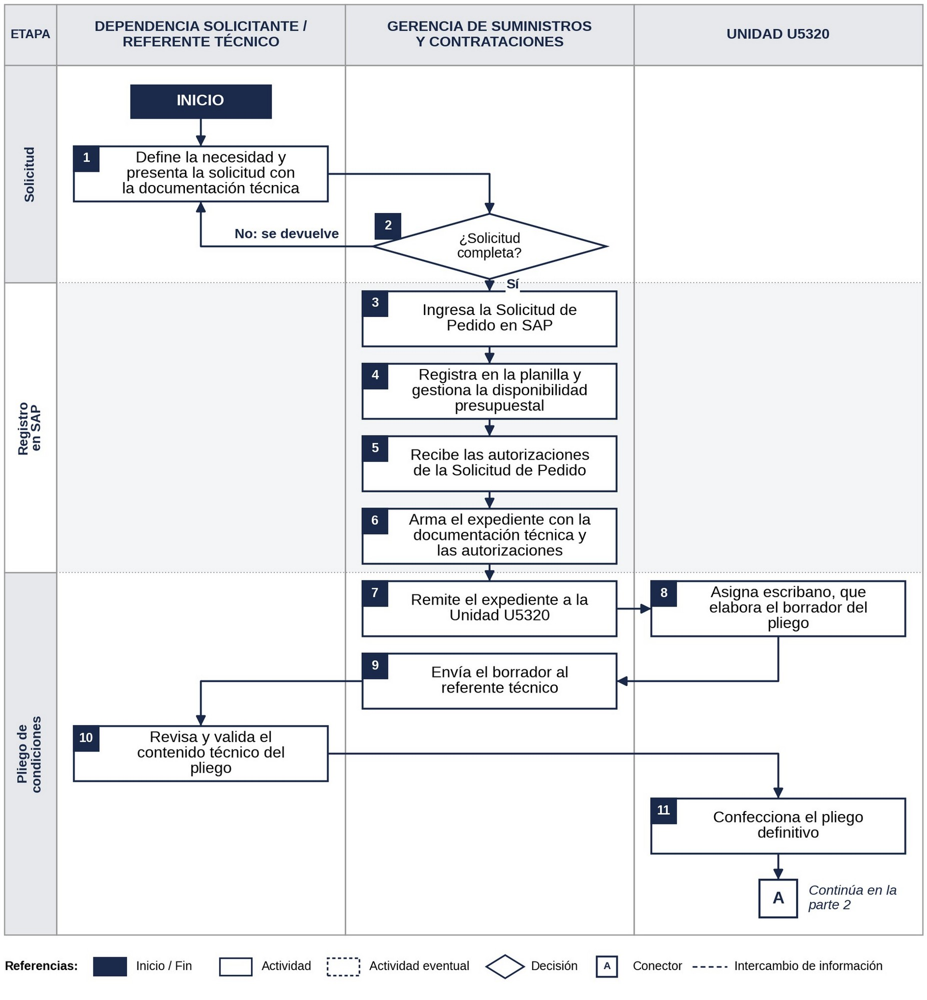
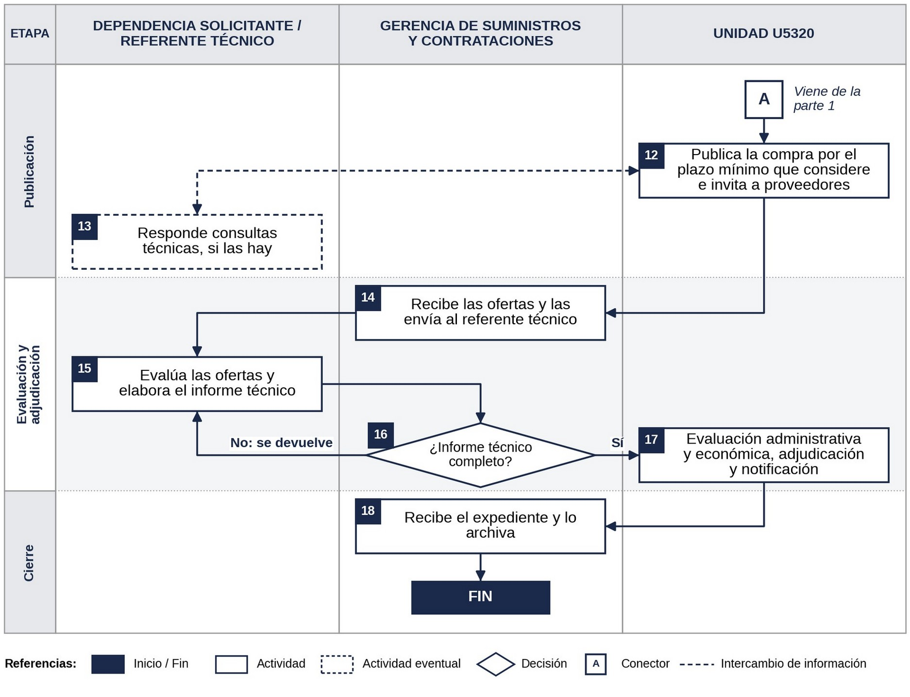

Compras centralizadas
Guía del procedimiento para las compras que se tramitan con la intervención de la Unidad U5320, desde la solicitud hasta la adjudicación y el archivo.
- Responsable
- Gerencia de Suministros y Contrataciones
- Documento marco
- Protocolo de Actuación de Almacenes y Compras de Servicios Generales
- Quiénes intervienen
- Dependencia solicitante (o su referente técnico), Compras y Unidad U5320
- Empieza con
- La solicitud de compra, con su documentación técnica
- Termina con
- La adjudicación notificada y el expediente archivado
- Registro oficial
- SAP y expediente electrónico
Una compra centralizada sigue la misma lógica que una descentralizada, con un actor más: la Unidad U5320, que prepara el pliego, publica y adjudica.
- La dependencia solicitante explica la necesidad, entrega la documentación técnica, valida el contenido técnico del pliego, responde las consultas técnicas y evalúa técnicamente las ofertas.
- Compras orienta, revisa que la solicitud esté completa, registra en SAP, arma el expediente, coordina con la Unidad U5320 y con la dependencia, y archiva.
- La Unidad U5320 asigna el escribano, confecciona el pliego, publica, adjudica y notifica.
Este trámite lleva más tiempo que una compra descentralizada: conviene planificarlo con anticipación y consultar a Compras antes de empezar.
Comprende bienes, repuestos, insumos, equipamiento y servicios que se tramitan con la intervención de la Unidad U5320. La recepción de lo comprado y la ejecución del contrato no forman parte de esta guía; se resumen en «Consejos útiles» como referencia.
¿Quién hace qué?
Dependencia solicitante / referente técnico
- Explica la necesidad y define qué se compra y en qué cantidad.
- Presenta la solicitud con las especificaciones y los requisitos mínimos.
- Revisa, completa y valida el contenido técnico del pliego.
- Responde las consultas técnicas de los proveedores.
- Evalúa técnicamente las ofertas y hace el informe técnico.
Pasos: 1, 10, 13 y 15
Compras (Gerencia de Suministros y Contrataciones)
- Orienta a la dependencia para armar la solicitud.
- Revisa que esté completa y, si falta algo, la devuelve.
- Registra en SAP, gestiona el presupuesto y las autorizaciones.
- Arma el expediente y lo remite a la Unidad U5320.
- Coordina el pliego, las consultas y la evaluación; revisa que el informe técnico esté completo y archiva.
Pasos: 2 a 7, 9, 14, 16 y 18
Unidad U5320
- Asigna el escribano, que hace el borrador del pliego.
- Confecciona el pliego definitivo con el contenido técnico validado.
- Publica la compra e invita a proveedores.
- Hace la evaluación administrativa y económica, adjudica y notifica.
Pasos: 8, 11, 12 y 17
Antes de empezar: qué incluir en la solicitud
Una solicitud completa avanza sin idas y vueltas. Cuanto más contexto se aporte, mejor. Revisá que incluya:
- Para qué se necesita (justificación) y qué equipos o unidades involucra.
- Cantidades requeridas.
- Cuándo se necesita (plazo estimado de utilización o ejecución) y su prioridad.
- Disponibilidad presupuestal, cuando corresponda.
- Documentación técnica: especificaciones, requisitos mínimos de admisibilidad, planos o fotos, según el caso.
- Nombre del referente técnico, que luego validará el pliego y evaluará las ofertas.
Para preparar la documentación técnica podés partir de los anexos de requisitos y especificaciones técnicas para artículos o servicios.
Paso a paso
Los números coinciden con los del flujograma del procedimiento.
Etapa 1. Solicitud
Paso 1. Dependencia
Presenta la solicitud de compra a Compras, con la documentación técnica.
Queda registrado: Solicitud y documentación técnica
Paso 2. Compras
Revisa que esté completa. Es una revisión formal, no técnica. Si falta algo, la devuelve y el trámite empieza cuando está completa.
Queda registrado: Devolución, si corresponde
Etapa 2. Registro en SAP
Paso 3. Compras
Ingresa la Solicitud de Pedido en SAP, que genera su número.
Queda registrado: SAP
Paso 4. Compras
Registra la solicitud en la planilla de seguimiento y gestiona la disponibilidad presupuestal.
Queda registrado: Planilla; SAP
Paso 5. Compras
Con la Solicitud de Pedido grabada, obtiene las autorizaciones.
Queda registrado: Autorizaciones (SAP)
Paso 6. Compras
Arma el expediente electrónico con la documentación técnica y la captura de las autorizaciones.
Queda registrado: Expediente
Etapa 3. Pliego de condiciones
Paso 7. Compras
Remite el expediente a la Unidad U5320.
Queda registrado: Expediente
Paso 8. Unidad U5320
Asigna el escribano, que hace el borrador del pliego.
Queda registrado: Borrador del pliego
Paso 9. Compras
Recibe el borrador y lo envía al referente técnico.
Queda registrado: Expediente
Paso 10. Dependencia
Revisa, completa y valida el contenido técnico del pliego (objeto, especificaciones y requisitos mínimos) y lo devuelve.
Queda registrado: Contenido técnico validado
Paso 11. Unidad U5320
Confecciona el pliego definitivo, coordinando con Compras los aspectos administrativos.
Queda registrado: Pliego de condiciones
Etapa 4. Publicación
Paso 12. Unidad U5320
Publica la compra por el plazo que considere e invita a proveedores. Las consultas técnicas se derivan al referente.
Queda registrado: Publicación; invitaciones
Paso 13. Dependencia
Responde las consultas técnicas a tiempo, para que se comuniquen dentro del plazo de publicación.
Queda registrado: Respuesta a consultas
Etapa 5. Evaluación y adjudicación
Paso 14. Compras
Recibe las ofertas y las envía al referente técnico.
Queda registrado: Expediente; ofertas
Paso 15. Dependencia
Evalúa técnicamente las ofertas y envía a Compras el informe técnico, con:
- cumplimiento de las especificaciones;
- comparación de las ofertas;
- motivos técnicos de aceptación o rechazo;
- conclusión y recomendación.
Queda registrado: Informe técnico
Paso 16. Compras
Revisa que el informe esté completo; si falta algo, lo devuelve. Si está completo, lo incorpora al expediente y lo remite a la Unidad U5320.
Queda registrado: Expediente con informe
Paso 17. Unidad U5320
Hace la evaluación administrativa y económica, crea el pedido de adjudicación con las autorizaciones que correspondan y notifica.
Queda registrado: Pedido; notificación
Etapa 6. Cierre
Paso 18. Compras
Recibe el expediente y lo archiva.
Queda registrado: Expediente
Flujograma


Consejos útiles
- Sin documentación técnica no hay trámite. Es lo primero que Compras necesita para empezar (Protocolo, numeral 5).
- El pliego también tiene contenido técnico. El referente lo revisa y valida antes de que se haga el pliego definitivo: una validación rápida y cuidadosa acorta los plazos.
- Primero el escribano. Su asignación es previa a la confección del pliego.
- Cada uno aporta lo que conoce. Lo técnico lo define la dependencia; Compras y la Unidad U5320 lo respetan tal como fue definido (Protocolo, numerales 6 y 7).
- Si falta algo, se devuelve para completar. No es un rechazo: el trámite sigue cuando se corrige (Protocolo, numeral 13).
- SAP es el registro oficial. La planilla de seguimiento es solo una ayuda interna (Protocolo, numeral 3).
- Si la compra no se va a publicar, revisá antes la guía PR-04.
| Quién | Qué hace |
|---|---|
| Dependencia / referente técnico | Acompaña la ejecución, verifica técnicamente lo recibido y da la conformidad técnica. |
| Unidad Almacén y Despacho | Controla que las cantidades recibidas coincidan con lo comprado. |
| Área competente | Hace la recepción administrativa, una vez dada la conformidad técnica. |
Términos útiles
Compra centralizada
La que, por su monto, se tramita con intervención de la Unidad U5320, dentro de los importes vigentes para este procedimiento. Ante dudas sobre el monto, consultá a Compras.
Referente técnico
Persona que la dependencia designa para acompañar técnicamente la compra.
Pliego de condiciones
Documento que rige el llamado. Se hace a partir del borrador del escribano y del contenido técnico validado por la dependencia.
Informe técnico
Análisis de las ofertas hecho por la dependencia, con los contenidos del numeral 8 del Protocolo.
Unidad U5320
Unidad que asigna el escribano, confecciona el pliego, publica, adjudica y notifica.
Documentos que se generan
La dependencia hace la solicitud, la documentación técnica, la validación técnica del pliego, las respuestas a consultas y el informe técnico; Compras registra en SAP, captura las autorizaciones y lleva el expediente y la planilla; la Unidad U5320 hace el pliego y el pedido de adjudicación.
Normativa de referencia
TOCAF, resoluciones internas y protocolos de compras aplicables.
Esta ficha es una síntesis. El procedimiento vigente es el PDF. Ante cualquier duda, escribí a Compras antes de iniciar el trámite.